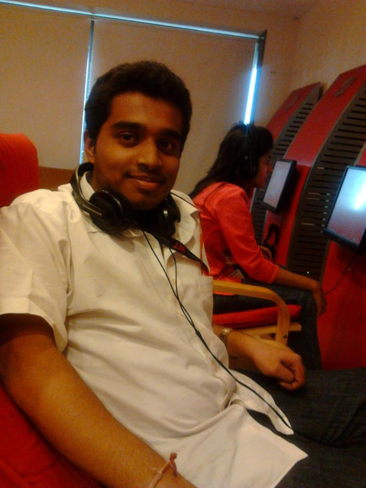

Resume
Tejas M Jambhale
Citizen:Indian DOB-30-04-1991

email:tejas.jambhale91@gmail.com
Contact:9833379327.
Objectives:
To work in a stimulating environment where I can apply & enhance my knowledge,
skill to serve the firm to the best of my efforts
Education:
2011-2014
Master in Computer Application (Expected Completion year 2014)
MET’s Institute Of Computer Science, Bandra (West), Mumbai
2008-2011
Bachelor of Computer Application.
Completed BCA from Indira College of Commerce & Science College, Pune(Wakad)
2006-2008
HSC (Mumbai Board)
Completed HSC from M.M.K.College of Commerce & Science, Mumbai
2006
SSC (Maharashtra Board)
Completed SSC from St.Stanislaus High School,Maharashtra Board.
Key Skills:
Operating System:Windows
Languages:C, C++,VB, Java.
Databases: SQL server, MS – Access, Oracle
Web Technologies:HTML,CSS, Javascript
Other Interest:
Football
Cricket
New Technology